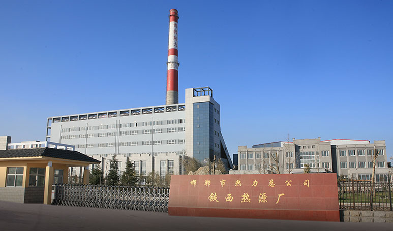

邯郸热力-中电洲际环保
城市集中供热
Urban central heating多种清洁供暖方式互为补充，因地制宜选用电厂余热、工业废水余热、地热能、天然气、高效煤粉锅炉等清洁热源替代燃煤小锅炉等原分散供热方式，使供热集约化管理，提高能源利用效率，降低能源消耗，减少污染物排放，治理大气污染，提升人民群众的生活幸福感。

武强县集中热力供热

Comprehensive Environmental
多种清洁供暖方式互为补充，因地制宜选用电厂余热、工业废水余热、地热能、天然气、高效煤粉锅炉等清洁热源替代燃煤小锅炉等原分散供热方式，使供热集约化管理，提高能源利用效率，降低能源消耗，减少污染物排放，治理大气污染，提升人民群众的生活幸福感。

生物质热电联产项目以农林废弃物为燃料进行发电、供热，兼具社会效益和环境效益，符合国家产业政策。
一座30MW的热电厂，年处理农林废弃物30万吨，年减排二氧化碳约25万吨，年增加农民收入9000万元,电厂余热可供150万㎡面积。
面向城市，以固废处置、综合园区为基础充分利用垃圾、餐厨、
危废等固废处置工艺的协同作用，实现以废治废，提高资源利用效率，最大程度降低污染排放，全面打通固废源头收集、
清运到终端处理的全链条协同，通过城乡环卫一体化等手段，实现生态环境城乡共同治理协调发展。

水务板块专注于水务环保行业，以污水及再生水厂处理服务、供水服务、水厂建设、水环境综合治理建造服务、工程及技术咨询为主营业务，集水务项目的投资、建设、运营、管理于一体，致力打造国内一流的水务环境综合服务商。
中电环保凭借强大的投资实力和技术能力，面对市政基础设施的建设缺口和生态化不足问题，遵循国家生态文明建设精神指引，以PPP模式致力于园林景观、特色小镇、水环境治理（黑臭水体、河道治理、生态湿地公园、流域治理）、海绵城市、综合管廊、美丽乡村的建设和运营。